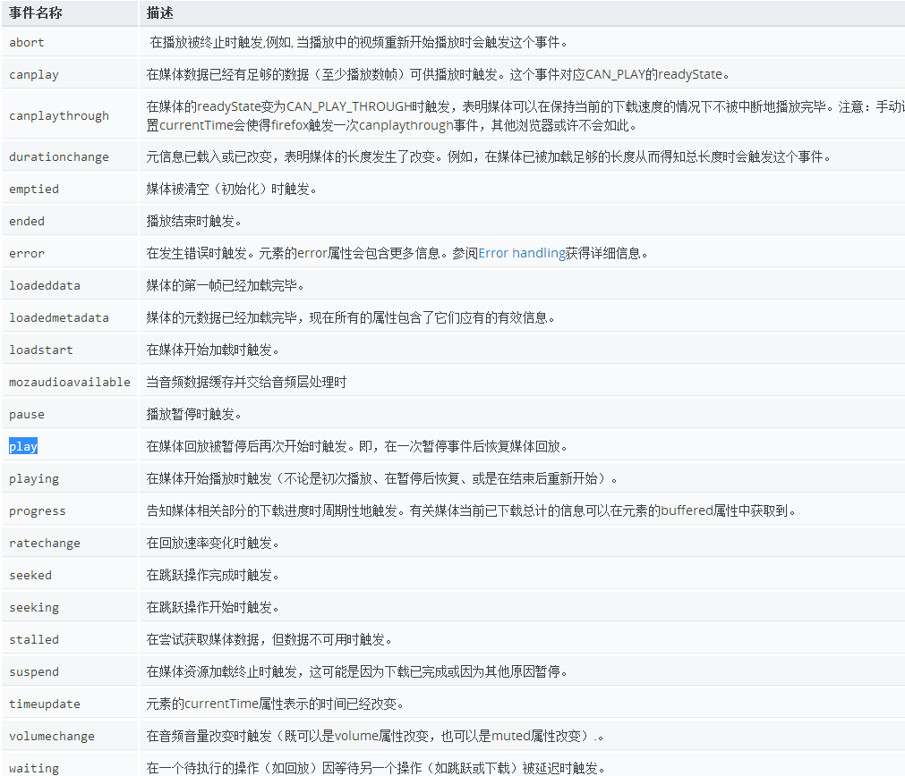
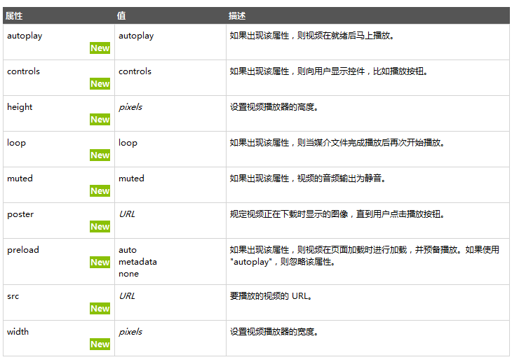

学习目标:
- 能够说出fullpage插件的使用基本思路
- 能写出购物案例屏幕滚动效果及其侧边栏制作
- 能写出第一屏布局及其动画效果
- 能写出第二屏布局及其动画效果
- 能写出第三屏布局及其动画效果
- 能写出第四、五、六、七屏布局及其动画效果
- 能写出第八屏布局及其动画效果
能写出添加键盘滚动以及重新开始播放动画
typora-copy-images-to: media
---
购物网站宣传页面

案例目的：
- 复习---复习前面学过的HTML5+CSS3
- 综合---综合运用jquery完成案例
- 拓展---可以做宣传页面或者个人简历
fullpage 全屏插件
全屏滚动效果，原生js也很好实现，主要是用 mousewheel 鼠标滚轮滚动事件， 来判断上滚动还是下滚动，之后设置每次滚动的高度为屏幕的高度即可。但是，虽然效果简单，但是兼容性很差，要做很多兼容处理及比较麻烦啦！（了解一下，有兴趣的同学可以研究一下）
fullPage.js 是一个基于 jQuery 的插件，它能够帮你很方便、很轻松的制作出全屏网站。
github 官网 https://github.com/alvarotrigo/fullPage.js
中文演示地址 http://www.dowebok.com/demo/2014/77/
主要功能有：
支持鼠标滚动
支持前进后退和键盘控制
多个回调函数
支持手机、平板触摸事件
支持 CSS3 动画
支持窗口缩放
窗口缩放时自动调整
可设置滚动宽度、背景颜色、滚动速度、循环选项、回调、文本对齐方式等等
引用文件
<link rel="stylesheet" href="css/jquery.fullPage.css">
<script src="js/jquery.min.js"></script>
<!-- jquery.easings.min.js 是必须的，用于 easing 参数，也可以使用完整的 jQuery UI 代替 -->
<script src="js/jquery.easings.min.js"></script>
<script src="js/jquery.fullPage.js"></script>
HTML 结构
<div id="fullpage">
<div class="section">第一屏</div>
<div class="section">第二屏</div>
<div class="section">
<div class="slide">第三屏的第一屏</div>
<div class="slide">第三屏的第二屏</div>
<div class="slide">第三屏的第三屏</div>
<div class="slide">第三屏的第四屏</div>
</div>
<div class="section">第四屏</div>
</div>

JavaScript入口函数
$(function(){
$('#fullpage').fullpage();
});
fullpage 详细参数
| 选项 | 类型 | 默认值 | 说明 |
|---|---|---|---|
| verticalCentered | 字符串 | true | 内容是否垂直居中 |
| resize | 布尔值 | false | 字体是否随着窗口缩放而缩放 |
| sectionColor | 函数 | 无 | 设置背景颜色 |
| anchors | 数组 | 无 | 定义锚链接 |
| scrollingSpeed | 整数 | 700 | 滚动速度，单位为毫秒 |
| easing | 字符串 | easeInQuart | 滚动动画方式 |
| menu | 布尔值 | false | 绑定菜单，设定的相关属性与 anchors 的值对应后，菜单可以控制滚动 |
| navigation | 布尔值 | false | 是否显示项目导航 |
| navigationPosition | 字符串 | right | 项目导航的位置，可选 left 或 right |
| navigationTooltips | 数组 | 空 | 项目导航的 tip |
| slidesNavigation | 布尔值 | false | 是否显示左右滑块的项目导航 |
| slidesNavPosition | 字符串 | bottom | 左右滑块的项目导航的位置，可选 top 或 bottom |
| controlArrowColor | 字符串 | #fff | 左右滑块的箭头的背景颜色 |
| loopBottom | 布尔值 | false | 滚动到最底部后是否滚回顶部 |
| loopTop | 布尔值 | false | 滚动到最顶部后是否滚底部 |
| loopHorizontal | 布尔值 | true | 左右滑块是否循环滑动 |
| autoScrolling | 布尔值 | true | 是否使用插件的滚动方式，如果选择 false，则会出现浏览器自带的滚动条 |
| scrollOverflow | 布尔值 | false | 内容超过满屏后是否显示滚动条 |
| css3 | 布尔值 | false | 是否使用 CSS3 transforms 滚动 |
| paddingTop | 字符串 | 0 | 与顶部的距离 |
| paddingBottom | 字符串 | 0 | 与底部距离 |
| fixedElements | 字符串 | 无 | |
| normalScrollElements | 无 | ||
| keyboardScrolling | 布尔值 | true | 是否使用键盘方向键导航 |
| touchSensitivity | 整数 | 5 | |
| continuousVertical | 布尔值 | false | 是否循环滚动，与 loopTop 及 loopBottom 不兼容 |
| animateAnchor | 布尔值 | true | |
| normalScrollElementTouchThreshold | 整数 | 5 |
fullPage.js 方法
注意方法的使用时需要添加：
$.fn.fullpage 比如
$.fn.fullpage.moveTo(1);
| 名称 | 说明 |
|---|---|
| moveSectionUp() | 向上滚动 |
| moveSectionDown() | 向下滚动 |
| moveTo(section, slide) | 滚动到 |
| moveSlideRight() | slide 向右滚动 |
| moveSlideLeft() | slide 向左滚动 |
| setAutoScrolling() | 设置页面滚动方式，设置为 true 时自动滚动 |
| setAllowScrolling() | 添加或删除鼠标滚轮/触控板控制 |
| setKeyboardScrolling() | 添加或删除键盘方向键控制 |
| setScrollingSpeed() | 定义以毫秒为单位的滚动速度 |
回调函数
| 名称 | 说明 |
|---|---|
| afterLoad | 滚动到某一屏后的回调函数，接收 anchorLink 和 index 两个参数，anchorLink 是锚链接的名称，index 是序号，从1开始计算 |
| onLeave | 滚动前的回调函数，接收 index、nextIndex 和 direction 3个参数：index 是离开的“页面”的序号，从1开始计算；nextIndex 是滚动到的“页面”的序号，从1开始计算；direction 判断往上滚动还是往下滚动，值是 up 或 down。 |
| afterRender | 页面结构生成后的回调函数，或者说页面初始化完成后的回调函数 |
| afterSlideLoad | 滚动到某一水平滑块后的回调函数，与 afterLoad 类似，接收 anchorLink、index、slideIndex、direction 4个参数 |
| onSlideLeave | 某一水平滑块滚动前的回调函数，与 onLeave 类似，接收 anchorLink、index、slideIndex、direction 4个参数 |
jQuery Easing.js 插件
介绍：easing是jquery的一个插件，使用它可以创建更加绚丽的动画效果。
环境：因为easing是jQuery的插件，所以必须是在引入jquery之后再引入它
如果只想要简单的写法就用
$(".car").animate({"left": "150%"}, 4000, "easeInElastic", function() {});
easing:格式为json,{duration:持续时间,easing:过渡效果,complete:成功后的回调函数}
$(element).animate({
height:500,
width:600
},{
easing: 'easeInOutQuad',
duration: 500,
complete: function(){}
});
- linear
- swing
- easeInQuad
- easeOutQuad
- easeInOutQuad
- easeInCubic
- easeOutCubic
- easeInOutCubic
- easeInQuart
- easeOutQuart
- easeInOutQuart
- easeInQuint
- easeOutQuint
- easeInOutQuint
- easeInExpo
- easeOutExpo
- easeInOutExpo
- easeInSine
- easeOutSine
- easeInOutSine
- easeInCirc
- easeOutCirc
- easeInOutCirc
- easeInElastic
- easeOutElastic
- easeInOutElastic
- easeInBack
- easeOutBack
- easeInOutBack
- easeInBounce
- easeOutBounce
- easeInOutBounce

https://matthewlein.com/experiments/easing.html
动画复习
兼容处理（理解）
在不支持HTML5新标签的浏览器里，会将这些新的标签解析成行内元素(inline)对待，所以我们只需要将其转换成块元素(block)即可使用，但是在IE9版本以下，并不能正常解析这些新标签，但是却可以识别通过document.createElement('tagName')创建的自定义标签，于是我们的解决方案就是将HTML5的新标签全部通过document.createElement('tagName')来创建一遍，这样IE低版本也能正常解析HTML5新标签了。
处理方式：在实际开发中我们更多采用的是通过检测IE浏览器的版本来加载三方的一个JS库来解决兼容问题（测试在IE下面的兼容性：ieTester软件的使用）
我们解决的问题， 主要是针对于ie低版本的，也就是只有低版本ie才执行才对。
<!--[if lt IE 9]>
<script src="js/respond.js"></script>
<script src="js/html5shiv.min.js"></script>
<![endif]—>
respond.js 目的是为了解决 ie低版本的CSS3媒体查询 media query
条件注释 了解
<!--[if !IE]><!--> 除IE外都可识别 <!--<![endif]-->
<!--[if IE]> 所有的IE可识别 <![endif]-->
<!--[if IE 6]> 仅IE6可识别 <![endif]-->
<!--[if lte IE 6]> IE6以及IE6以下版本可识别 <![endif]-->
<!--[if gte IE 6]> IE6以及IE6以上版本可识别 <![endif]-->
<!--[if IE 7]> 仅IE7可识别 <![endif]-->
<!--[if lt IE 7]> IE7以下版本可识别 <![endif]-->
<!--[if gt IE 7]> IE7以上版本可识别 <![endif]-->
<!--[if IE 8]> 仅IE8可识别 <![endif]-->
<!--[if IE 9]> 仅IE9可识别 <![endif]-->
360度3D 旋转插件
使用方法：
引用js文件包
<script src="js/jquery.min.js"></script> <script src="js/circlr.min.js"></script>2.书写结构：
<div class="container">
<div id="circlr">
<img data-src="picture/1.png" />
<img data-src="picture/2.png" />
<img data-src="picture/3.png" />
...
<div id="loader"></div>
</div>
</div>
注意， 是 自定义属性 data-src 里面写路径 2. loader 是 加载项
书写css
#circlr { cursor: move; margin: 0 auto; min-height: 100px; position: relative; } #circlr #loader { background: url(../images/loader.gif) center center no-repeat; bottom: 0; display: none; left: 0; position: absolute; right: 0; top: 0; }
4.调用文件对象
<script type="text/javascript">
var crl = circlr('circlr', {
scroll : true,
loader : 'loader'
});
</script>
5.API
参数
mouse：是否通过鼠标进行图片旋转，默认值为true。
scroll：是否通过scroll进行图片旋转，默认值为false。
vertical：是否在垂直方向上移动鼠标时旋转图片，默认值为false。
reverse：是否反转方向，默认值为false。
cycle：是否循环旋转图片，默认值为true。
start：开始动画帧，默认值为0。
speed：动画帧通过circlr.turn(i)切换的速度，默认值为50毫秒。
autoplay：是否自动进行图片360度旋转播放，默认值为false。
playSpeed：动画序列的播放速度，默认值为100毫秒。
loader：预加载DOM元素的ID。
ready：图片加载完成后的回调函数。
change：动画帧改编之后的回调函数（以当前帧和总帧数为参数）。
方法
crl.el：返回对象的DOM元素节点。
crl.length：返回对象的总的动画帧数。
crl.turn(i)：动画旋转到第i帧。
crl.go(i)：动画跳转到第i帧。
crl.play()：开始动画序列的播放。
crl.stop()：停止动画播放。
crl.hide()：隐藏对象的DOM元素节点。
crl.show()：显示对象的DOM元素节点。
crl.set(options)：在插件初始化之后改变对象的参数：
vertical
reverse
cycle
speed
playSpeed
视差滚动插件
视差滚动（Parallax Scrolling）指网页滚动过程中，多层次的元素进行不同程度的移动，视觉上形成立体运动效果的网页展示技术
主要核心就是前景和背景以不同的速度移动，从而创造出3D效果。 这种效果可以给网站一个很好的补充。
特性
视差滚动效果酷炫，适合于个性展示的场合。
视差滚动徐徐展开，适合于娓娓道来，讲故事的场合。
视差滚动容易迷航，需要具备较强的导航功能。
原理
传统的网页的文字、图片、背景都是一起按照相同方向相同速度滚动的，而视差滚动则是在滚动的时候，内容和多层次的背景实现或不同速度，或不同方向的运动。
有的时候也可以加上一些透明度、大小的动画来优化显示。
利用background-attachment属性实现。
background-attachment: fixed || scroll || local
Stellar.js是什么？
[stellar.js]是一个 jQuery插件，能很容易地给网站添加视差滚动效果。 尽管已经停止了维护，但它非常稳定，与最新版本的jQuery兼容，很多开发者也在使用它。 这个插件在jQuery插件库里很流行。
http://markdalgleish.com/projects/stellar.js/ 官网
引用 js包
<script src="path/to/jquery/jquery.min.js"></script>
<script src="path/to/jquery.stellar.min.js"></script>
引用html
<div class="content" id="content1">
<p>TEXT HERE</p>
</div>
<div class="content" id="content2">
<p>TEXT HERE</p>
</div>
<div class="content" id="content3" data-stellar-background-ratio="0.5">
<p>TEXT HERE</p>
</div>
<div class="content" id="content4" data-stellar-background-ratio="0.5">
<p>TEXT HERE</p>
</div>
<div class="content" id="content5" data-stellar-background-ratio="0.5">
<p>TEXT HERE</p>
</div>
<div class="content" id="content6" data-stellar-background-ratio="0.5">
<p>TEXT HERE</p>
</div>
引入CSS
body {
font-size: 20px;
color: white;
text-shadow: 0 1px 0 black, 0 0 5px black;
}
p {
padding: 0 0.5em;
margin: 0;
}
.content {
background-attachment: fixed;
height: 400px;
}
#content1 {
background-image: url("xxx.jpg");
}
#content2 {
background-image: url("xxx.jpg");
}
#content3 {
background-image: url("xxx.jpg");
}
#content4 {
background-image: url("xxx.jpg");
}
#content5 {
background-image: url("xxx.jpg");");
}
#content6 {
background-image: url("xxx.jpg");
}
js调用函数
$.stellar({
horizontalScrolling: false,
responsive: true
});
详细参数
| 名称 | 说明 |
|---|---|
| horizontalScrolling 和 verticalScrolling | 该配置项用来设置视差效果的方向。horizontalScrolling设置水平方向，verticalScro设置垂直方向， 为布尔值，默认为true |
| responsive | 该配置项用来制定load或者resize时间触发时是否刷新页面，其值为布尔值，默认为false |
| hideDistantElements | 该配置项用来设置移出视线的元素是否隐藏，其值为布尔值，若不想隐藏则设置为false` |
| data-stellar-ratio="2" | 定义了此元素针对页面滚动的速度比率，比如，0.5为页面滚动的50%，2为页面滚动的200%，所以数值越大，你可以看到页面元素滚动速度越快。 |
| data-stellar-background-ratio | 该配置项用在单个元素中，其值为一个正数，用来改变被设置元素的影响速度。 例如 值为0.3时，则表示背景的滚动速度为正常滚动速度的0.3倍。如果值为小数时最好在样式表中设置 |
QQ TIM 案例

渐变-gradient
- 线性渐变 linear-gradient
- 参数（方向,颜色 开始位置,颜色 结束位置）
- 方向 (to top|bottom|left|right) | (to top right)|(45deg)
- 颜色 red
- 开始位置 10%|100px
- 参数（方向,颜色 开始位置,颜色 结束位置）
- 径向渐变 radial-gradient
- 参数（形状|半径大小|圆心位置,颜色 开始位置,颜色 结束位置）
- 形状 circle（正圆）|ellpise（椭圆） 如果省略，目标元素是正方形-正圆，目标元素是长方形-椭圆
- 半径大小 (farthest-side(最远边)|farthest-corner(最近边)|farthest-corner(最远角)|closest-side(最近边)) | （自定义大小 （椭圆有两条半径） 如 45px,40px）
- 圆心位置 （at top left center）|自定义位置（at 22px 50px）
- 参数（形状|半径大小|圆心位置,颜色 开始位置,颜色 结束位置）
新标签
- range 标签
- oninput 事件
dom增强
- document.querySelector()-单个元素
- document.querySelectorAll()-数组
- 四种操作class的方法
- add
- remove
- contains
- toggle
- h5自定义属性 data-*
- dataset对象
多媒体标签
- audio
- 支持格式
- 属性
- 方法
- 事件
- 
- 支持格式
- video
- oncanplay 事件 加载完毕
- ontimeupdate 播放的每一秒都可以触发
- duration 视频的总时长
- currentTime 当前播放的进度
- volume 声音的大小
- 支持格式
- 属性
- 
- 方法
- 事件


网络状态
- navigator.online
- 事件 online 连接上网的时候触发
- 事件 offline 断开网络的时候触发
地理位置
- navigator.geolocation.getCurrentPosition 接受三个参数 (获取成功的回调，失败的回调,配置参数) (success,error,{enableHighAccuracy(是否获取高精度):true,timeout(超时时间 ms),maximumAge(重新获取地理位置的时间 ms)})
- success(position)成功的回调
- postion.coords.latitude 纬度
- postion.coords.longitude 经度
- postion.coords.accuracy 精度-精确到多少米
- postion.coords.altitude 海拔高度(支持程度不够)
- error(err) 失败的回调
- code 状态值
- 1 用户拒绝
- 2 获取不到信息
- 3 超时
- message 提示信息
- code 状态值
- opctions(可选) 设置信息
- enableHighAccuracy 是否要求高精度-默认true
- timeout 超时时间设置-毫秒
- maximumAge 地理位置信息缓存有效时间
全屏
- 谷歌 webkitRequestPullScreen
- 火狐 mozRequestPullScreen
- ie msRequestPullscreen
file
- 新的file对象 new FileReader()
- fileReader.readAsText() 当作文本读取
- fileReader.readAsDataURL 读取文件的路径 图片、视频、音乐
- fileReader.readAsBinaryString 读取文件的二进制码
- fileReader.onload 读取文件结束后执行
- fileReader.result 在onload中 获取读取完的文件的结果
拖拽
- 被拖拽的元素
- ondragstart 开始拖拽的时候
- ondrag 拖拽移动的时候
- ondragleave 拖拽的时候 离开自身的范围
- ondragend 拖拽松开手指的时候
- 舞台元素（用来安放被拖拽元素的盒子）
- ondragenter 被拖拽的元素进入舞台的时候
- ondragover 被拖拽的元素在舞台上移动的时候
- 阻止浏览器默认事件 e.preventDefault
- ondragleave 被拖拽的元素离开舞台上的时候
- ondrop 被拖拽的元素在舞台上松开手指的时候
- e.dataTransfer.files 获取被拖拽的目标元素（图片-文件等）
存储
- sesstionStorage
- 大小约为5M
- 存在于当前会话中
- 点击超链接后还存在
- 关闭当前页面,浏览器就不再存在
- 页面权限验证
- 方法
- getItem
- setItem
- removeItem
- clear
- localStorage
- 大小为20M
- 关闭浏览器还存在
- 每一次发送请求不会带上
- getItem
- setItem
- removeItem
- clear